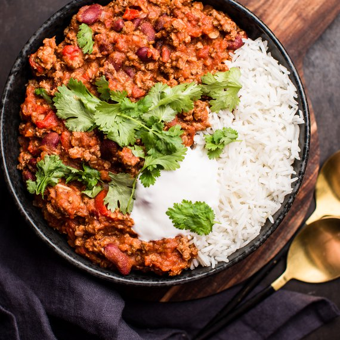

🏡
Chilli Con Carne

Odkaz
Suroviny (4 porcie)
- Olej 3 lžíce
- velká cibule, nakrájená najemno 1 ks
- červená paprika, na tenké proužky 1 ks
- česnek jemně nasekaný 2 stroužky
- mleté chilli 1 zarovnaná lžička
- mletá sladká paprika 1 vrchovatá lžička
- mletá skořice 1/2 lžičky
- Sůl
- čerstvě namletý pepř
- mletý římský kmín 1/2 lžičky
- libové mleté hovězí maso 500 g
- hovězí vývar 300 ml
- loupaná rajčata z konzervy 400 g
- sušená majoránka 1/2 lžičky
- třtinový cukr 1 lžička
- řajčatový protlak 2 lžíce
- Horká čokoláda 2–3 kostičky
- konzervované červené fazole 400 g
Príloha
- dlouhozrnná rýže
- tortilly
- Zakysaná smetana
- papričky jalapeño
- rajčatová salsa
Postup
-
V kastrolu si rozehřejte olej a opečte na něm cibuli dosklovata. Pak
přidejte papriku, česnek, chilli, čerstvou chilli papričku, sladkou
papriku, skořici a římský kmín, opékejte tři minuty a pak přidejte mleté
hovězí maso.
-
Opékejte dalších cca 8 minut za občasného zamíchání, všechno maso by na
závěr mělo být opečené pěkně dohněda. Pak přidejte k masu propláchnuté
fazole, několikrát promíchněte a vlijte do kastrolu k masovo-zeleninové
směsi hovězí vývar.
-
Při použití čerstvých fazolí je nutné je namočit předem, a před tím, než
je přidáte k masu, z nich pečlivě slijte vodu. Čerstvé fazole se
vaří/dusí společně s masem. Je dobré použít dva druhy fazolí, jídlo je
pak pestřejší – např. kombinace bílých a černých nebo červených fazolí.
Pokud použijete fazole konzervované, přidávají se do jídla později, tzn.
zhruba po 20 minutách, spolu s čokoládou, aby se nerozvařily.
-
Při použití čerstvých fazolí je nutné je namočit předem, a před tím, než
je přidáte k masu, z nich pečlivě slijte vodu. Čerstvé fazole se
vaří/dusí společně s masem. Je dobré použít dva druhy fazolí, jídlo je
pak pestřejší – např. kombinace bílých a černých nebo červených fazolí.
Pokud použijete fazole konzervované, přidávají se do jídla později, tzn.
zhruba po 20 minutách, spolu s čokoládou, aby se nerozvařily.
-
Přidejte čokoládu a fazole, promíchejte a nechte ještě 10 minut
probublávat. Pak ochutnejte a případně dochuťte chilli, záleží na vás,
jestli jídlo chcete ostřejší, nebo jemnější, můžete přidat i čerstvý
koriandr. Dobře promíchejte, opět zakryjte poklicí a nechte 10 minut
odpočívat.
-
Typickou přílohou pro chilli con carne je rýže a také kukuřičné
tortilly. Připravte rýži, udělejte si salsu a nahřejte tortilly. Do
několik misek dejte papričky jalapenos, vyrobenou salsu a zakysanou
smetanu. Servírujete tak, že každý si na prostorný talíř sám servíruje
chili con carne, rýži, tortillu, přídavné omáčky a smetanu.